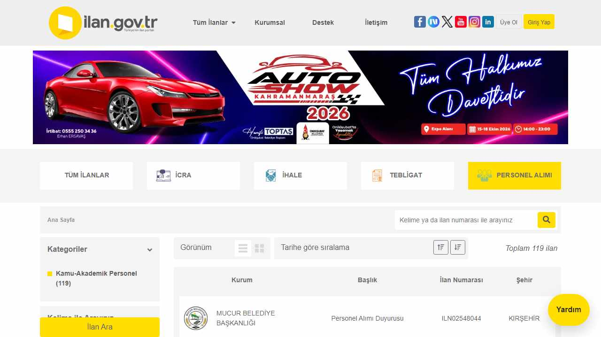
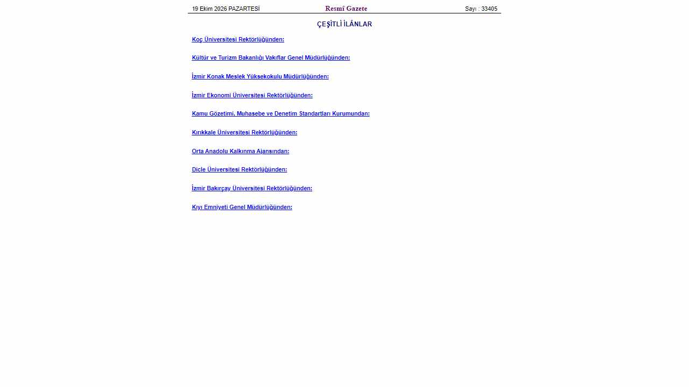
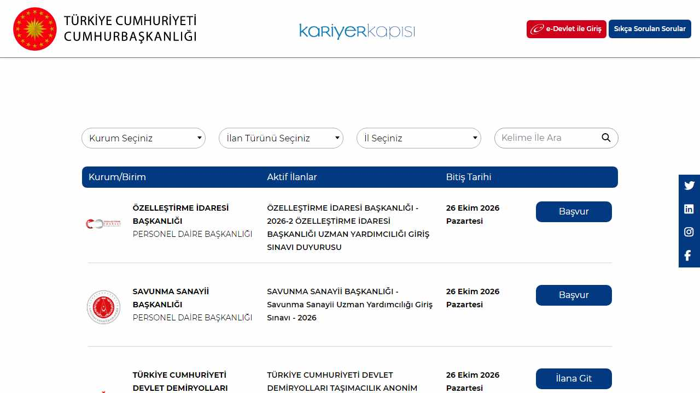
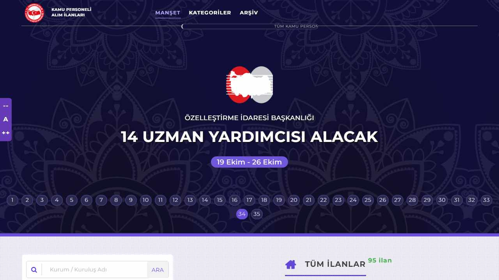
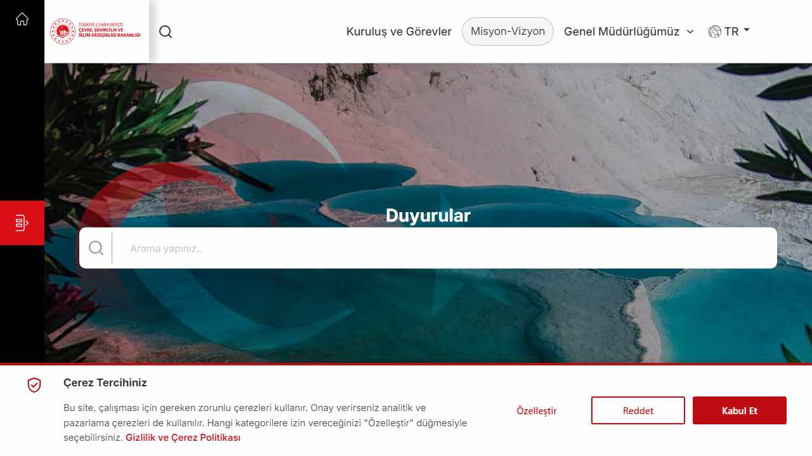
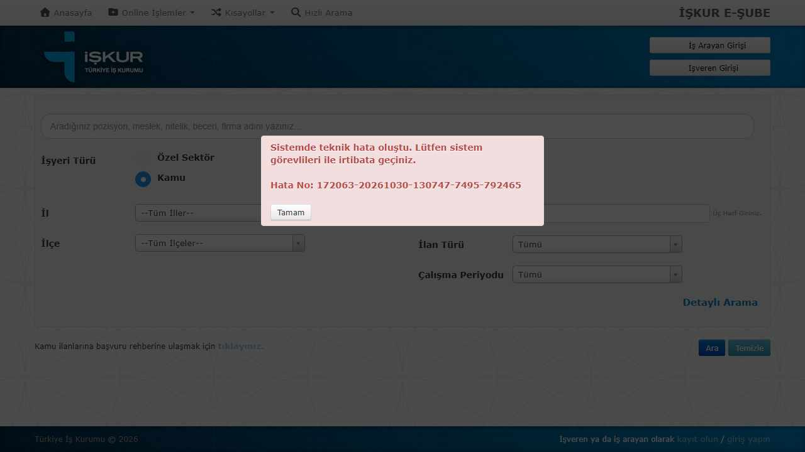
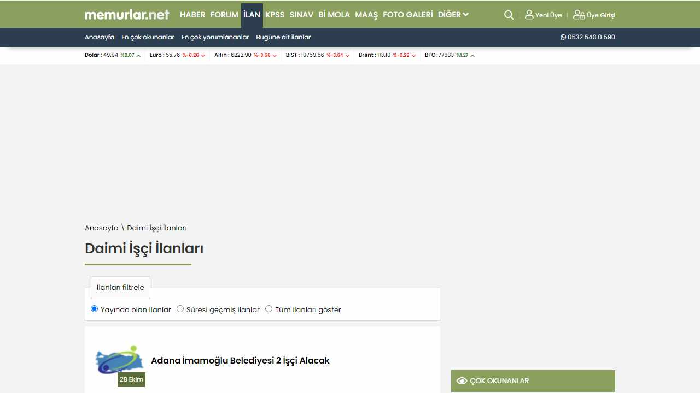

Not: sitede toplam: 141, okunan: 141, sayfalama: currentPage
Son URL: https://www.ilan.gov.tr/ilan/tum-ilanlar/personel-alimi?ats=5¤tPage=12
Başlık: ilan.gov.tr - Türkiye'nin İlan Portalı

Tüm İlanlar Kurumsal Destek İletişim Üye OlGiriş Yap Yardım TÜM İLANLAR İCRA İHALE TEBLİGAT PERSONEL ALIMI Ana Sayfa Kategoriler Kamu-Akademik Personel (141) Kelime ile Arayınız İlan Yeri Lütfen İl Seçiniz Yayın Tarihi Yayına Göre Arama Lütfen Yayın Seçiniz Kuruma Göre Arama Lütfen Kurum Seçiniz Fiyat İlan Türü Seçiniz İCRA İHALE TEBLİGAT PERSONEL ALIMI Eleman Sayısı Aranılan Nitelik ve Unvan Başvuru Süresi İlan Ara Görünüm Tarihe göre sıralama Toplam 141 ilan Kurum Başlık İlan Numarası Şehir MUCUR BELEDİYE BAŞKANLIĞI Personel Alımı Duyurusu ILN02548044 KIRŞEHİR GEREDE BELEDİYE BAŞKANLIĞI Gerede Belediye Başkanlığı Personel Alım İlanı DPB845447 BOLU DİDİM BELEDİYE BAŞKANLIĞI Didim Belediye Başkanlığı Zabıta Memuru Alım İlanı DPB845445 AYDIN ÖZELLEŞTİRME İDARESİ BAŞKANLIĞI PERSONEL DAİRE BAŞKANLIĞI Uzman Yardımcılığı Giriş Sınavı Duyurusu ILN02547149 ANKARA BATI AKDENİZ KALKINMA AJANSI GENEL SEKRETERLİĞİ Batı Akdeniz Kalkınma Ajansı Personel Alım İlanı DPB845425 ISPARTA GELİR İDARESİ BAŞKANLIĞI Gelir İdaresi Başkanlığından 860 Gelir Uzman Yardımcısı Alım İlanı DPB845283 ANKARA TÜRMOB TÜRKİYE SERBEST MUHASEBECİ MALİ MÜŞAVİRLER VE YEMİNLİ MALİ MÜŞAVİRLER ODALARI BİRLİĞİ TÜRMOB'dan Serbest Muhasebeci Mali Müşavirlik Sınav Duyurusu DPB845227 ANKARA TÜRMOB TÜRKİYE SERBEST MUHASEBECİ MALİ MÜŞAVİRLER VE YEMİNLİ MALİ MÜŞAVİRLER ODALARI BİRLİĞİ TÜRMOB'dan Yeminli Mali Müşavirlik Sınav Duyurusu DPB845226 ANKARA SEGEM SİGORTACILIK EĞİTİM MERKEZİ 2026 Yılı Aktüerlik Sınavları İlanı
'' -> / 'Tüm İlanlar' -> /ilan/tum-ilanlar 'İCRA' -> /ilan/tum-ilanlar/icra?ats=2 'İHALE' -> /ilan/tum-ilanlar/ihale?ats=3 'TEBLİGAT' -> /ilan/tum-ilanlar/tebligat?ats=4 'PERSONEL ALIMI' -> /ilan/tum-ilanlar/personel-alimi?ats=5 '' -> /ilan/tum-ilanlar/icra?ats=2 '' -> /ilan/kategori/1/emlak?ats=2 '' -> /ilan/kategori/2/vasita?ats=2 '' -> /ilan/kategori/4/endustriyel-urunler?ats=2 '' -> /ilan/kategori/6/elektronik?ats=2 '' -> /ilan/kategori/3/muhtelif?ats=2 '' -> /ilan/tum-ilanlar/ihale?ats=3 '' -> /ilan/kategori/9/ihale-duyurulari?ats=3 '' -> /ilan/kategori/1/emlak?ats=3 '' -> /ilan/kategori/2/vasita?ats=3 '' -> /ilan/kategori/4/endustriyel-urunler?ats=3 '' -> /ilan/kategori/3/muhtelif?ats=3 '' -> /ilan/tum-ilanlar/tebligat?ats=4 '' -> /ilan/kategori/7/tebligat-ve-duyurular?ats=4 '' -> /ilan/kategori/12/iflas-hukuku-davalari?ats=4 '' -> /ilan/tum-ilanlar/personel-alimi?ats=5 '' -> /ilan/kategori/8/kamu-akademik-personel?ats=5 '' -> /ilan/tum-ilanlar 'Kurumsal' -> /kurumsal-basin-ilan-kurumu 'Destek' -> /yardim-nasil-uye-olurum 'İletişim' -> /iletisim-genel-mudurluk '' -> https://www.facebook.com/resmiilan/ '' -> https://sosyal.teknofest.app/@ilangovtr '' -> https://twitter.com/ilangovtr '' -> https://www.youtube.com/channel/UCoLna6joUEuJ4eO7bjCP_Bw '' -> https://www.instagram.com/resmiilan/ '' -> https://www.linkedin.com/company/ilan-gov-tr/ 'Üye Ol' -> /uyelik/uye-ol 'Giriş Yap' -> /uyelik/giris 'TÜM İLANLAR' -> /ilan/tum-ilanlar 'İCRA' -> /ilan/tum-ilanlar/icra?ats=2 'İHALE' -> /ilan/tum-ilanlar/ihale?ats=3 'TEBLİGAT' -> /ilan/tum-ilanlar/tebligat?ats=4 'PERSONEL ALIMI' -> /ilan/tum-ilanlar/personel-alimi?ats=5
GET 200 https://www.ilan.gov.tr//assets/appconfig.production.json
yanıt: {
"remoteServiceBaseUrl": "https://www.ilan.gov.tr/api",
"appBaseUrl": "https://www.ilan.gov.tr",
"cdnBaseUrl": "https://medya.ilan.gov.tr/"
}
GET 200 https://www.ilan.gov.tr/api/AbpUserConfiguration/GetAll
yanıt: {"result":{"multiTenancy":{"isEnabled":false,"ignoreFeatureCheckForHostUsers":false,"sides":{"host":"Host","tenant":"Tenant"}},"session":{"userId":null,"tenantId":1,"impersonatorUserId":null,"impersonatorTenantId":1,"multiTenancySide":"Tenant"},"localization":{"currentCulture":{"name":"tr","displayN
POST 200 https://www.google-analytics.com/j/collect?v=1&_v=j102&a=1461021907&t=pageview&_s=1&dl=https%3A%2F%2Fwww.ilan.gov.tr%2Filan%2Ftum-ilanlar%2Fpersonel-alimi%3Fats%3D5&ul=tr-tr&dt=ilan.gov.tr%20-%20T%C3%
GET 200 https://www.ilan.gov.tr/api/api/services/app/Session/GetCurrentLoginInformations
yanıt: {"result":{"application":{"version":"5.0.0.0","releaseDate":"2026-09-24T04:22:04Z","features":{}},"user":null,"tenant":{"tenancyName":"Default","name":"Default","id":1}},"targetUrl":null,"success":true,"error":null,"unAuthorizedRequest":false,"__abp":true}
GET 200 https://www.ilan.gov.tr/api/api/services/app/Banner/GetDetailUniversal?bannerPositionEnum=Popup_Genel
yanıt: {"result":null,"targetUrl":null,"success":true,"error":null,"unAuthorizedRequest":false,"__abp":true}
GET 200 https://www.ilan.gov.tr/api/api/services/app/AdHomePage/GetRichMenuStats
yanıt: {"result":[{"id":2,"key":"İCRA","displayName":null,"slug":"İCRA","plateNumber":null,"count":0,"stats":[{"id":1,"key":"Emlak","displayName":null,"slug":"Emlak","plateNumber":null,"count":8253,"stats":null,"orderNo":25,"statType":"Category","logoPath":null,"iconFullPath":null},{"id":2,"key":"Vasıta","
GET 200 https://www.ilan.gov.tr/api/api/services/app/Banner/GetDetailUniversal?bannerPositionEnum=Genel_Ust
yanıt: {"result":null,"targetUrl":null,"success":true,"error":null,"unAuthorizedRequest":false,"__abp":true}
GET 200 https://www.ilan.gov.tr/api/api/services/app/Banner/GetDetailUniversal?bannerPositionEnum=Mobil_Genel_Sag
yanıt: {"result":null,"targetUrl":null,"success":true,"error":null,"unAuthorizedRequest":false,"__abp":true}
GET 200 https://www.ilan.gov.tr/api/api/services/app/Banner/GetDetailUniversal?bannerPositionEnum=Genel_Sol
yanıt: {"result":null,"targetUrl":null,"success":true,"error":null,"unAuthorizedRequest":false,"__abp":true}
GET 200 https://www.ilan.gov.tr/api/api/services/app/Banner/GetDetailUniversal?bannerPositionEnum=Mobil_Genel_Ust
yanıt: {"result":null,"targetUrl":null,"success":true,"error":null,"unAuthorizedRequest":false,"__abp":true}
GET 200 https://www.ilan.gov.tr/api/api/services/app/Menu/GetBottomMenu
yanıt: {"result":[{"id":81,"parentId":null,"url":null,"title":"KURUMSAL","children":[{"id":86,"parentId":81,"url":"/kurumsal-basin-ilan-kurumu","title":"Basın İlan Kurumu","children":null,"isSelected":false,"contentTitle":"-","contentSlug":"-","contentDetail":"-"},{"id":170,"parentId":81,"url":"/kurumsal-t
GET 200 https://www.ilan.gov.tr/api/api/services/app/Banner/GetDetailUniversal?bannerPositionEnum=Mobil_Genel_Sol
yanıt: {"result":null,"targetUrl":null,"success":true,"error":null,"unAuthorizedRequest":false,"__abp":true}
GET 200 https://www.ilan.gov.tr/api/api/services/app/Banner/GetDetailUniversal?bannerPositionEnum=Genel_Sag
yanıt: {"result":null,"targetUrl":null,"success":true,"error":null,"unAuthorizedRequest":false,"__abp":true}
POST 204 https://www.google-analytics.com/g/collect?v=2&tid=G-E5HGE1NKEK>m=45je6al0h2v9116736288za20ozb9119647798zd9119647798xf1&_p=1792658221651&gcd=13l3l3l3l1l1&npa=0&dma=0&are=1&cid=150600123.1792658222&f
POST 204 https://www.google-analytics.com/g/collect?v=2&tid=G-E5HGE1NKEK>m=45je6al0h2v9116736288za20gzb9119647798zd9119647798xf1&_p=1792658221651&gcd=13l3l3l3l1l1&npa=0&dma=0&_eu=AEAAAAQ&ae=a&are=1&cid=15060
GET 200 https://www.ilan.gov.tr/api/api/services/app/Banner/GetDetailUniversal?bannerPositionEnum=Mobil_Icsayfa_Ust
GET 200 https://www.ilan.gov.tr/api/api/services/app/Banner/GetDetailUniversal?bannerPositionEnum=Icsayfa_Sol
GET 200 https://www.ilan.gov.tr/api/api/services/app/Banner/GetDetailUniversal?bannerPositionEnum=Icsayfa_Ust
GET 200 https://www.ilan.gov.tr/api/api/services/app/Banner/GetDetailUniversal?bannerPositionEnum=Mobil_Icsayfa_Sag
GET 200 https://www.ilan.gov.tr/api/api/services/app/Banner/GetDetailUniversal?bannerPositionEnum=Icsayfa_Sag
GET 200 https://www.ilan.gov.tr/api/api/services/app/Banner/GetDetailUniversal?bannerPositionEnum=Mobil_Icsayfa_Sol
GET 200 https://www.ilan.gov.tr/api/api/services/app/Filter/GetAllFiltersOfSet?setIdAdType=5
GET 200 https://www.ilan.gov.tr/api/api/services/app/AdHomePage/GetAdStatsByExternalInstitutions
POST 200 https://www.ilan.gov.tr/api/api/services/app/Ad/AdsByFilter
gövde: {"keys":{"ats":[5]},"skipCount":0,"maxResultCount":12}
POST 200 https://f2c4e469-7c3b-414b-8508-97c3d4b861f1.collector.p.analitik.bik.gov.tr/api/collect
gövde: website=f2c4e469-7c3b-414b-8508-97c3d4b861f1&hostname=www.ilan.gov.tr&screen=1280x720&language=tr-TR&url=/ilan/tum-ilanlar/personel-alimi?ats=5&referrer=/ilan/tum-ilanlar/personel-alimi?ats=5&fingerprNot: sitede toplam: 18, okunan: 17, personel ilanı: 11, PDF bulma: dizin linkleri — okunamayan PDF: 1 (taranmış görüntü olabilir; elle kontrol listesinde)
Son URL: https://www.resmigazete.gov.tr/ilanlar/eskiilanlar/2026/10/20261022-4.htm
Başlık: ÇEŞİTLİ İLANLAR

22 Ekim 2026 PERŞEMBE Resmî Gazete Sayı : 33408 ÇEŞİTLİ İLÂNLAR Cumhurbaşkanlığı Strateji ve Bütçe Başkanlığından: Çevre, Şehircilik ve İklim Değişikliği Bakanlığı Yerel Yönetimler Genel Müdürlüğünden: Milli Eğitim Bakanlığı Destek Hizmetleri Genel Müdürlüğünden: Milli Savunma Bakanlığı Makine ve Kimya Endüstri A.Ş. Genel Müdürlüğünden: Tarım ve Orman Bakanlığı Orman Genel Müdürlüğünden: Galatasaray Üniversitesi Rektörlüğünden: KTO Karatay Üniversitesi Rektörlüğünden: Adalet Bakanlığından: Muş İli Elmakaya Belediye Başkanlığından: Isparta İli Sarıidris Belediye Başkanlığından: Süleyman Demirel Üniversitesi Rektörlüğünden: Kültür ve Turizm Bakanlığı Vakıflar Genel Müdürlüğünden: Enerji ve Tabii Kaynaklar Bakanlığı Maden ve Petrol İşleri Genel Müdürlüğünden: Boğaziçi Üniversitesi Rektörlüğünden: Bolu Abant İzzet Baysal Üniversitesi Rektörlüğünden: Ege Üniversitesi Rektörlüğünden: İstanbul Beykent Üniversitesi Rektörlüğünden: Kültür ve Turizm Bakanlığından:
'Cumhurbaşkanlığı Strateji ve Bütçe Başkanlığından:' -> 20261022-4-1.pdf 'Çevre, Şehircilik ve İklim Değişikliği Bakanlığı Yerel Yönetimler Gene' -> 20261022-4-2.pdf 'Milli Eğitim Bakanlığı Destek Hizmetleri Genel Müdürlüğünden:' -> 20261022-4-3.pdf 'Milli Savunma Bakanlığı Makine ve Kimya Endüstri A.Ş. Genel Müdürlüğün' -> 20261022-4-4.pdf 'Tarım ve Orman Bakanlığı Orman Genel Müdürlüğünden:' -> 20261022-4-5.pdf 'Galatasaray Üniversitesi Rektörlüğünden:' -> 20261022-4-6.pdf 'KTO Karatay Üniversitesi Rektörlüğünden:' -> 20261022-4-7.pdf 'Adalet Bakanlığından:' -> 20261022-4-8.pdf 'Muş İli Elmakaya Belediye Başkanlığından:' -> 20261022-4-9.pdf 'Isparta İli Sarıidris Belediye Başkanlığından:' -> 20261022-4-10.pdf 'Süleyman Demirel Üniversitesi Rektörlüğünden:' -> 20261022-4-11.pdf 'Kültür ve Turizm Bakanlığı Vakıflar Genel Müdürlüğünden:' -> 20261022-4-12.pdf 'Enerji ve Tabii Kaynaklar Bakanlığı Maden ve Petrol İşleri Genel Müdür' -> 20261022-4-13.pdf 'Boğaziçi Üniversitesi Rektörlüğünden:' -> 20261022-4-14.pdf 'Bolu Abant İzzet Baysal Üniversitesi Rektörlüğünden:' -> 20261022-4-15.pdf 'Ege Üniversitesi Rektörlüğünden:' -> 20261022-4-16.pdf 'İstanbul Beykent Üniversitesi Rektörlüğünden:' -> 20261022-4-17.pdf 'Kültür ve Turizm Bakanlığından:' -> 20261022-4-18.pdf
POST 200 https://v2-ping-ns01-4878e6a4-2a79-41cc-93d6-0ffc5a9b6c2d.collector.p.analitik.bik.gov.tr/api/collect/check
gövde: {"website":"4878e6a4-2a79-41cc-93d6-0ffc5a9b6c2d","hostname":"www.ilan.gov.tr","eventId":"92c91c71-314d-4b38-bf4d-7043776bcd15","isBot":false,"td":0,"ts":1792083126000,"timestamp":1792658264870,"activNot: HATA: alan adı çözülemedi (ağ/DNS) — 3 deneme başarısız. Ayrıntı: Page.goto: net::ERR_NAME_NOT_RESOLVED at https://kariyerkapisi.gov.tr/isealim
Call log:
navigating to "https://kariyerkapisi.gov.tr/isealim", waiting until "dom
Son URL: chrome-error://chromewebdata/
Başlık:

(yok)
Not: sitede toplam: 101, okunan: 140 (ham bağlantı: 140, tekrarlar elendi)
Son URL: https://kamuilan.sbb.gov.tr/
Başlık: Kamu Personeli Alım İlanları

KAMU PERSONELİ ALIM İLANLARI MANŞET KATEGORİLER ARŞİV TÜM KAMU PERSONEL İLANLARI TEK ADRESTE. GELİR İDARESİ BAŞKANLIĞI 860 GELİR UZMAN YARDIMCISI ALACAK 20 Ekim - 22 Ekim STRATEJİ VE BÜTÇE BAŞKANLIĞI 7 SÖZLEŞMELİ BİLİŞİM PERSONELİ ALACAK 22 Ekim - 5 Kasım TARIM VE ORMAN BAKANLIĞI 13 SÖZLEŞMELİ BİLİŞİM PERSONELİ ALACAK 22 Ekim - 6 Kasım GALATASARAY ÜNİVERSİTESİ 1 SÖZLEŞMELİ BİLİŞİM PERSONELİ ALACAK 22 Ekim - 6 Kasım DEVLET DEMİRYOLLARI TAŞIMACILIK A.Ş GENEL MÜDÜRLÜĞÜ 166 SÜREKLİ İŞÇİ ALACAK 21 Ekim - 26 Ekim İZMİR KALKINMA AJANSI İPTAL İLANI 21 Ekim - 1 Kasım YURTDIŞI TÜRKLER VE AKRABA TOPLULUKLAR BAŞKANLIĞI 15 YURTDIŞI TÜRKLER VE AKRABA TOPLULUKLAR UZMAN YARDIMCISI ALACAK 20 Ekim - 16 Kasım KAMU GÖZETİMİ, MUHASEBE VE DENETİM STANDARTLARI KURUMU 13 UZMAN YARDIMCISI ALACAK 19 Ekim - 2 Kasım KIYI EMNİYETİ GENEL MÜDÜRLÜĞÜ 3 SÜREKLİ İŞÇİ ALACAK 19 Ekim - 23 Ekim KIYI EMNİYETİ GENEL MÜDÜRLÜĞÜ 5 ENGELLİ İŞÇİ ALACAK 19 Ekim - 23 Ekim KIYI EMNİYETİ GENEL MÜDÜRLÜĞÜ 1 ESKİ HÜKÜMLÜ İŞÇİ ALACAK 19 Ekim - 23 Ekim ORTA ANADOLU KALKINMA AJANSI 6 UZMAN, 1 DESTEK PERSONELİ ALACAK 9 Kasım - 3 Aralık TÜRKİYE İŞ KURUMU GENEL MÜDÜRLÜĞÜ 11 ALACAK 26 Ekim - 8 Kasım SAYIŞTAY BAŞKANLIĞI 2 ADET SÖZLEŞMELİ BİLİŞİM PERSONELİ ALACAK 19 Ekim - 30 Ekim İSKENDERUN TEKNİK ÜNİVERSİTESİ 1 İÇ DENETÇİ ALACAK 16 Ekim - 30 Ekim TÜRK AKREDİTASYON KURUMU 7 AKREDİTASYON UZMANI YARDIMCISI ALACAK 16 Ekim - 2 Kasım TÜRK AKREDİTASYON KURUMU 2 ALACAK 16 Ekim - 31 Ekim DÜZCE ÜNİVERSİTESİ 153 SÖZLEŞMELİ PERSONEL ALACAK 14
'' -> http://www.sbb.gov.tr 'MANŞET' -> #top 'KATEGORİLER' -> # 'ARŞİV' -> # '' -> # 'GELİR İDARESİ BAŞKANLIĞI\n860 GELİR UZMAN YARDIMCISI ALACAK\n20 Ekim - 2' -> ilanDetay.aspx?kod=SHBAbeE0piXNfJfz6dVJuFdJPp9YM5Cyd9scXl2P6NFuzi%2f180WoznhoGXEBY2QApZdb%2fQa9M4LOIEGfZq0xwTw 'STRATEJİ VE BÜTÇE BAŞKANLIĞI\n7 SÖZLEŞMELİ BİLİŞİM PERSONELİ ALACAK\n22 ' -> ilanDetay.aspx?kod=CXduMEjmZBU7bbX6ENbcf2scQC9cWWuY9RAUtP6aTp5y1F65hCcrp1RjxA%2farFtZ%2fFb2K0bhN4LNQbLE1v6C5Km 'TARIM VE ORMAN BAKANLIĞI\n13 SÖZLEŞMELİ BİLİŞİM PERSONELİ ALACAK\n22 Eki' -> ilanDetay.aspx?kod=2taX%2fKeHrXLEcH5x8kKV6N5lEB%2frjx0A0ZMDjuf7VJdcsFWQBZbZ%2fS0R8V2Jqsq%2bnauHH%2f4zFWsVYTRcD 'GALATASARAY ÜNİVERSİTESİ\n1 SÖZLEŞMELİ BİLİŞİM PERSONELİ ALACAK\n22 Ekim' -> ilanDetay.aspx?kod=bi1vJsvkBcdp%2bK1uuPLL40YmCjBzvA3Sn3WXemw%2f8Yk%2fLulN5bwVE9nHpJYZgj6KG9KEJd%2fRI4S5pwjm2F% 'DEVLET DEMİRYOLLARI TAŞIMACILIK A.Ş GENEL MÜDÜRLÜĞÜ\n166 SÜREKLİ İŞÇİ A' -> ilanDetay.aspx?kod=TUOSZe86YAGnodeyxoIzrMENETihdq0vWsiZYYw4%2f4xXA4Mw1sjVIz%2bl%2bJ%2bIeufJ%2bAZ47WEvQRxrBbwUE 'İZMİR KALKINMA AJANSI\nİPTAL İLANI\n21 Ekim - 1 Kasım' -> ilanDetay.aspx?kod=TH9HJSRnVmT3yyYylfA9qBVJ0jVqjZiVzVAmfnQ%2b2Ogm5%2fE4TpFYJcWh3tc0xwkpvh9bzAsayfXyEW%2fwENpb2 'YURTDIŞI TÜRKLER VE AKRABA TOPLULUKLAR BAŞKANLIĞI\n15 YURTDIŞI TÜRKLER ' -> ilanDetay.aspx?kod=oryQ%2fXqDMZh3rIBeQvJdN9qLFvlTOUx4HOE1gxGVY2pZ5bEyluWbGnVaS6WWylBZ%2bkyolWDb3ti4e0Gl2cSzo73 'KAMU GÖZETİMİ, MUHASEBE VE DENETİM STANDARTLARI KURUMU\n13 UZMAN YARDIM' -> ilanDetay.aspx?kod=LEEEakcu%2f%2bydZwQhjXL8FxG2EtJtN7KM7f9iUOV1mxXrDh6h%2fG0g5NgECxwAxTOeUbkXYayXLdmGi4nHVdfyK 'KIYI EMNİYETİ GENEL MÜDÜRLÜĞÜ\n3 SÜREKLİ İŞÇİ ALACAK\n19 Ekim - 23 Ekim' -> ilanDetay.aspx?kod=8JzQgpFJtdfwnXUptUyma2KMFDCmsX6UjPBb0XIZGnNOJXE9%2fHsHma2Jvtq6H8NF%2fgvgPn2QktiKZLDm4XMeIzV 'KIYI EMNİYETİ GENEL MÜDÜRLÜĞÜ\n5 ENGELLİ İŞÇİ ALACAK\n19 Ekim - 23 Ekim' -> ilanDetay.aspx?kod=EypdW00u17vxtGi7SY0uP8uQQsGI9MPss2sM3HsbJM1ukizUkgh44jIY9wj41ko%2fcccsAKZzwH2OE%2fon%2fzX8% 'KIYI EMNİYETİ GENEL MÜDÜRLÜĞÜ\n1 ESKİ HÜKÜMLÜ İŞÇİ ALACAK\n19 Ekim - 23 ' -> ilanDetay.aspx?kod=LqIpFo7ioPdAQDP7kIYXYuu1uEkddpJRPgSbzZpgi0xPH4vtP6qSHiXD1A5hlJT%2fvZtZZYjoqiV77rH8zpCXkbYeg 'ORTA ANADOLU KALKINMA AJANSI\n6 UZMAN, 1 DESTEK PERSONELİ ALACAK\n9 Kası' -> ilanDetay.aspx?kod=WqdU%2f90FKZEcguZlvF%2b4o3hO%2bJWTaggFoOKpnhPX9229qPLg83%2bsWxbqIIccl%2bUDziQ%2bcgMRC4f%2bv 'TÜRKİYE İŞ KURUMU GENEL MÜDÜRLÜĞÜ\n11 ALACAK\n26 Ekim - 8 Kasım' -> ilanDetay.aspx?kod=0JdT7Nn2Iy3lir3Rh5fDzKv%2fx4g8PQXkPCddh%2fQK5U0MJPaNpyoXq%2fjG1NM4sNzoPehCn01IL%2bwdiNSoXPL 'SAYIŞTAY BAŞKANLIĞI\n2 ADET SÖZLEŞMELİ BİLİŞİM PERSONELİ ALACAK\n19 Ekim' -> ilanDetay.aspx?kod=U0KCGO1qBSFlfq4V7PdkhYkjxvKd%2fhuwWjLqTOtpNbcszmm3Lxd0hINehgrd3oU9Wbn0VqULHWNtg7cpCUD0qL4K5 'İSKENDERUN TEKNİK ÜNİVERSİTESİ\n1 İÇ DENETÇİ ALACAK\n16 Ekim - 30 Ekim' -> ilanDetay.aspx?kod=e8cCDlTlyGDd3%2fatfj0d9LmAVXSBZ4%2bX6FX9fafp9KvhzD8OEFeBXEPzx2FDuL7wNTMeFB7eouLkEI1NJbRg4yR 'TÜRK AKREDİTASYON KURUMU\n7 AKREDİTASYON UZMANI YARDIMCISI ALACAK\n16 Ek' -> ilanDetay.aspx?kod=F4pW5D%2fi3p5OwFr9JrWzdHlzMkvw2obhp7zNReZ2Sg0h24QF8%2f7mAvc29hqe66ys%2bFXKLDPhDZW%2fRAz%2bC 'TÜRK AKREDİTASYON KURUMU\n2 ALACAK\n16 Ekim - 31 Ekim' -> ilanDetay.aspx?kod=s3RCnlCOytmZfZsLepfhRKy9g%2f7ezupHZC%2bGI%2bLu3ZCd3mt14QFAfFBQ%2fRj7jfVq1cv524kmSrp4nHo9zur 'DÜZCE ÜNİVERSİTESİ\n153 SÖZLEŞMELİ PERSONEL ALACAK\n14 Ekim - 28 Ekim' -> ilanDetay.aspx?kod=AnRnRXUBIBIFEJwoyVWiKsXe0OKug1CyEFhMH8LyJ2klglm4ZWZabK%2fSNAJUVBiw03fJ48De8hhxvp40PgtbL0QvV 'TÜRK STANDARTLARI ENSTİTÜSÜ\n17 SÖZLEŞMELİ BİLİŞİM PERSONELİ ALACAK\n15 ' -> ilanDetay.aspx?kod=QM0t1qsqTTb%2fLPzX97orGZSFLdKDKJR%2fW3RHkK6XZXI7lnvLNYY4pbU%2bRv%2fQKNovvIqcHpK6gWOsmfUCEGf 'İSTANBUL TEKNİK ÜNİVERSİTESİ\n25 SÖZLEŞMELİ PERSONEL ALACAK\n13 Ekim - 2' -> ilanDetay.aspx?kod=AcVia8dN7dZoDDZHHsWgHyO%2fWO4JcEUzLBHMX4ThDRYkcyAhmwoDbsyXJjGwG0HF5RkcejbQw63%2bjFxzSq788x2 'MEVLANA KALKINMA AJANSI\n1 UZMAN PERSONEL ALACAK\n2 Kasım - 13 Kasım' -> ilanDetay.aspx?kod=ErJbXzzetd3kxa%2ff9H5Z6gvBs7tbnwKYhNIzuFVJgUHGJwrREGC4aWR0FFJO0yIgo6bfmH5vMzkH048NPjzI8asHp 'ORTA KARADENİZ KALKINMA AJANSI\n5 ALACAK\n2 Kasım - 22 Kasım' -> ilanDetay.aspx?kod=iJFjoMmeSLj8XHbYCx%2b%2fgYcam0WVajkzC8zMCizrgRuFIoLC6SliSGtF%2br%2bEe8f8f5oyUGkYjF89cpsO5A9 'TASARRUF MEVDUATI SİGORTA FONU BAŞKANLIĞI\n10 FON DENETÇİ YARDIMCISI, 4' -> ilanDetay.aspx?kod=iguJHHAsqGFaiLmoQt8NejJyBbqkeNCNgyq3qw7coenECdfEWWqFHqzzPXRXUV1LlO5hv2F88pEvhS6YBeiXo0vL%2b 'MİLLİ SARAYLAR İDARESİ BAŞKANLIĞI\n158 SÖZLEŞMELİ PERSONEL ALACAK\n12 Ek' -> ilanDetay.aspx?kod=X3%2b0KTU0DjI5tDgxnsxEdfKVBKA1lXhM4HA3uHviwhzGwU5gakxwxgGaGuU35YbAS%2fLQZt0fJZ4ZoAxJPy62LiM 'VAKIFLAR GENEL MÜDÜRLÜĞÜ\n5 VAKIF UZMAN YARDIMCISI ALACAK\n12 Ekim - 25 ' -> ilanDetay.aspx?kod=duTB0RG4eSN7SfIPThE1eFQONoKb%2fXW6aObcxRhbxMsNKCW31%2b1Dz%2fxhc8k8vSW91RusrfZbHafm1dw%2bizc 'JANDARMA GENEL KOMUTANLIĞI\n135 MUVAZZAF SUBAY TEMİN EDİLECEKTİR\n12 Eki' -> ilanDetay.aspx?kod=sghwoZha4AXNbMIoXKiztVebI2k7S7O7PUs855ayLAEOSABif66GUWqufsFMhLWUDWTrJazs7uaYRD9eHI97H7hTAhH 'MİLLİ SAVUNMA BAKANLIĞI\nDENİZ KUVVETLERİ KOMUTANLIĞINA 2026 YILI DENİZ' -> ilanDetay.aspx?kod=cyGQR9kAaTe7SjiTowArW0OIp9FiqaGjHGEsbmjpsuoMcF3fqNby35eEF6NUKANTzQpafv1F1Tu648KpmmPweRMTtgz 'MİLLİ SAVUNMA BAKANLIĞI\nTÜRK SİLAHLI KUVVETLERİNE EN AZ DÖRT YIL SÜREL' -> ilanDetay.aspx?kod=PXxNQP5XOtumf%2bLYRSnx4eOlIOa8djWN06%2fVAQuSK2ZFJifb6Iruuhm9jmAy4EhBH8zXJIMmaSi1wlr2G%2bBQc 'İSTANBUL KALKINMA AJANSI\n5 UZMAN ALACAK\n2 Kasım - 22 Kasım' -> ilanDetay.aspx?kod=DtnZO42kOXBFVLKWbRHdJFHvJiA4c2%2b%2ffL1BPZnJw80fT9xcY2oBEAnhOR8HBUxM6Hc0YRosj3AKoQpLMMinTUt 'SAVUNMA SANAYİİ BAŞKANLIĞI\n22 SAVUNMA SANAYİİ UZMAN YARDIMCISI ALACAK\n' -> ilanDetay.aspx?kod=ZPuqgkhQS6YQUCuO3Bw5g07L8UA9tt7ZQQZncskhcY6tqyqfQVd8VSRnKZCO60YVlcqcL8Cw0AtcVoZHTgkD%2f9G5Z 'BANKACILIK DÜZENLEME VE DENETLEME KURUMU BAŞKANLIĞI\n15 SÖZLEŞMELİ BİLİ' -> ilanDetay.aspx?kod=yWL9x5KOhRu0ezJ5YU%2fEsssSUev5%2fSU%2fPRTsnzXcRqvbNWLOxTD77kRLq%2bqN9iTstc5rMqWsjYv4HITU1Qi 'TÜRK PATENT VE MARKA KURUMU\nSÖZLEŞMELİ BİLİŞİM PERSONELİ SINAV ALIM İL' -> ilanDetay.aspx?kod=OoFrUFsYOShnVSn9jbZ6pDnGFAyAaSskipM9QMTG%2fxwiKP%2fEyn4lGl8D05wU%2fydjF9xkZ9bjc5WQNRQt%2bYe 'YARGITAY BAŞKANLIĞI\n4 SÖZLEŞMELİ BİLİŞİM PERSONELİ ALACAK\n19 Ekim - 23' -> ilanDetay.aspx?kod=2SFiobnEQptt4oBcwqSr0RMhElr8UUT1AIiWOiaBzCQ1Qnsmdta9F8NFD48amZpo2wt6ACjjolM8uPU4E%2bmjP20Cd 'ADALET BAKANLIĞI\n150 İCRA MÜDÜR VE İCRA MÜDÜR YARDIMCISI ALACAK.\n20 Ek' -> ilanDetay.aspx?kod=FPzUwaSN8jhKoH4%2fnQJxP%2bhg4R6q0eMTJALcdzAdmJCH9o8ccOEDHu62AIAarTHYo9cfakc%2bonbmB2dOcrt6k 'DOĞU MARMARA KALKINMA AJANSI\n3 UZMAN, 2 DESTEK PERSONEL ALACAK\n12 Ekim' -> ilanDetay.aspx?kod=qy3urqFihIo2D%2bhPT%2bjCQSpNzIKMl5XQGh0E6Zb870MDFYNiNWH2KJPcEI6zAxOzPSS2Wt0sCvBpab4sz1tJTKy
POST 204 https://www.google-analytics.com/g/collect?v=2&tid=G-T9RHQ0436E>m=45je6ak1v869145278za208zd869145278xf1&_p=1792658377004&gcd=13l3l3l3l1l1&npa=0&dma=0&are=1&cid=1692585084.1792658377&frm=0&pscdl=noap
GET 200 https://syndication.twitter.com/settings?session_id=dd6fdd40e6e3a5cd4dcaf7862a30c90ead759337
yanıt: {"should_obtain_cookie_consent":false,"features":{"tfw_timeline_list":{"bucket":[],"version":null},"tfw_follower_count_sunset":{"bucket":true,"version":null},"tfw_tweet_edit_backend":{"bucket":"on","version":null},"tfw_refsrc_session":{"bucket":"on","version":null},"tfw_fosnr_soft_interventions_enabNot: sitede toplam: 34, okunan: 34 (yalnız ilan/alım başlıklı duyurular; 3 sayfa gezildi)
Son URL: https://yerelyonetimler.csb.gov.tr/duyurular/3
Başlık: Duyurular

Çerez Tercihiniz Bu site, çalışması için gereken zorunlu çerezleri kullanır. Onay verirseniz analitik ve pazarlama çerezleri de kullanılır. Hangi kategorilere izin vereceğinizi "Özelleştir" düğmesiyle seçebilirsiniz. Gizlilik ve Çerez Politikası Özelleştir Reddet Kabul Et Menü Arama yapınız.. Birimler Mevzuat Personel Hizmetleri Eylem Planları Rehberler Faaliyet Raporları İç Kontrol Resmi İstatistik Yerel Bilgi Sistemi İstatistikler Tüm Haberler Tüm Duyurular Anketler Sık Sorulan Sorular Dokümanlar İletişim Bilgileri Arama yapınız.. Kuruluş ve Görevler Misyon-Vizyon Genel Müdürlüğümüz TR Takip Et Duyurular Ana Sayfa Duyurular Sayfa: 3 Son Duyurular 22 Ekim 2026 Perşembe ISPARTA İLİ SARIİDRİS BELEDİYE BAŞKANLIĞINA İLK DEFA ATANMAK ÜZERE ZABITA MEMURU ALIMI DÜZELTME İLAN... 21 Ekim 2026 Çarşamba MUŞ İLİ ELMAKAYA BELEDİYESİNİNMEMUR ALIMI İPTAL İLANI... 21 Ekim 2026 Çarşamba MANİSA İLİ AKHİSAR BELEDİYE BAŞKANLIĞINA İLK DEFA ATANMAK ÜZERE MEMUR ALIM İLANI... 20 Ekim 2026 Salı KIRŞEHİR İLİ BOZTEPE BELEDİYE BAŞKANLIĞINA İLK DEFA ATANMAK ÜZERE MEMUR ALIM İLANI... 19 Ekim 2026 Pazartesi MALATYA İLİ DOĞANYOL BELEDİYE BAŞKANLIĞINA İLK DEFA ATANMAK ÜZERE SÖZLEŞMELİ PERSONEL ALIM İLANI... 16 Ekim 2026 Cuma İZMİR İLİ KARABAĞLAR BELEDİYE BAŞKANLIĞINA İLK DEFA ATANMAK ÜZERE SÖZLEŞMELİ PERSONEL ALIM İLANI... 09 Ekim 2026 Cuma ISPARTA İLİ SARIİDRİS BELEDİYE BAŞKANLIĞINA İLK DEFA ATANMAK ÜZERE ZABITA MEMURU ALIMI İLANI... 09 Ekim 2026 Cuma EDİRNE İ
'Gizlilik ve Çerez Politikası' -> https://csb.gov.tr/gizlilik-ve-cerez-politikasi-113655 'Gizlilik ve Çerez Politikası' -> https://csb.gov.tr/gizlilik-ve-cerez-politikasi-113655 '' -> / 'Birimler' -> https://yerelyonetimler.csb.gov.tr/birimler 'Mevzuat' -> https://yerelyonetimler.csb.gov.tr/ 'Kanunlar' -> https://yerelyonetimler.csb.gov.tr/kanunlar-i-90281 'Tüzükler' -> https://yerelyonetimler.csb.gov.tr/tuzukler-i-101924 'Yönetmelikler' -> https://yerelyonetimler.csb.gov.tr/yonetmelikler-i-90283 'Usul ve Esaslar' -> https://yerelyonetimler.csb.gov.tr/usul-ve-esaslar-i-101925 'Tebliğler' -> https://yerelyonetimler.csb.gov.tr/tebligler-i-106938 'Genelgeler' -> https://yerelyonetimler.csb.gov.tr/genelgeler-i-90284 'Yönergeler' -> https://yerelyonetimler.csb.gov.tr/yonergeler-i-101926 'Genel Yazılar' -> https://yerelyonetimler.csb.gov.tr/genel-yazilar-i-99398 'Mahalli İdareler Detaylı Hesap Planları' -> https://yerelyonetimler.csb.gov.tr/mahalli-idareler-detayli-hesap-planlari-i-100359 'Tasarruf Tedbirleri Genelgesi' -> https://yerelyonetimler.csb.gov.tr/tasarruf-tedbirleri-genelgesi-i-109410 'Görüşler' -> https://yerelyonetimler.csb.gov.tr/gorusler-91360 'Belediye Görüşleri' -> https://yerelyonetimler.csb.gov.tr/belediye-gorusleri-i-98891 'İşyeri Görüşleri' -> https://yerelyonetimler.csb.gov.tr/isyeri-gorusleri-i-98892 'Personel Görüşleri' -> https://yerelyonetimler.csb.gov.tr/personel-gorusleri-i-98889 'İdari Para Cezaları ve Parasal Sınırlar' -> https://yerelyonetimler.csb.gov.tr/idari-para-cezalari-ve-parasal-sinirlar-i-106809 'Komisyon Üyesi Hesaplama Tablosu' -> https://yerelyonetimler.csb.gov.tr/komisyon-uyesi-hesaplama-tablosu-88464 'Personel Hizmetleri' -> https://yerelyonetimler.csb.gov.tr/personel-hizmetleri-i-103128 'Büyükşehir Belediyeleri ve Bağlı Kuruluşları Şube Müdürlüğü İsimleri' -> https://yerelyonetimler.csb.gov.tr/buyuksehir-belediyeleri-ve-bagli-kuruluslari-sube-mudurlugu-isimleri-114946 'Personel Hizmetleri Rehberleri' -> https://yerelyonetimler.csb.gov.tr/personel-hizmetleri-rehberleri-113704 'Personel Alım İzni Formları' -> https://yerelyonetimler.csb.gov.tr/personel-alim-izni-formlari-i-111513 'Örnek İlan Metinleri' -> https://yerelyonetimler.csb.gov.tr/ornek-ilan-metinleri-i-111565 'Eylem Planları' -> https://yerelyonetimler.csb.gov.tr/eylem-planlari-i-103925 'Karayolu Trafik Güvenliği' -> https://yerelyonetimler.csb.gov.tr/karayolu-trafik-guvenligi-i-103926 'Rehberler' -> https://yerelyonetimler.csb.gov.tr/rehberler-i-112411 'Bütçe Hazırlama Rehberi' -> https://yerelyonetimler.csb.gov.tr/butce-hazirlama-rehberi-i-103179 '2022 - 2024 Bütçe Hazırlama Rehberi' -> https://yerelyonetimler.csb.gov.tr/2022---2024-butce-hazirlama-rehberi-i-106799 '2023 - 2025 Bütçe Hazırlama Rehberi' -> https://yerelyonetimler.csb.gov.tr/2023---2025-butce-hazirlama-rehberi-i-106800 '2024 - 2026 Bütçe Hazırlama Rehberi' -> https://yerelyonetimler.csb.gov.tr/2024---2026-butce-hazirlama-rehberi-i-110944 '2025 - 2027 Bütçe Hazırlama Rehberi' -> https://yerelyonetimler.csb.gov.tr/2025---2027-butce-hazirlama-rehberi-i-112395 '2026 - 2028 Bütçe Hazırlama Rehberi' -> https://yerelyonetimler.csb.gov.tr/2026---2028-butce-hazirlama-rehberi-i-113107 '2027 - 2029 Bütçe Hazırlama Rehberi' -> https://yerelyonetimler.csb.gov.tr/2027-2029-butce-hazirlama-rehberi-114911 'Belediye Meclisi, Toplantı ve Çalışmasına İlişkin Rehber' -> https://webdosya.csb.gov.tr/db/yerelyonetimler/dokumanlar/belediye-meclisi--8230-86782-20240415152737.pdf 'Elektrikli Araç Şarj İstasyonları Ruhsatlandırma Rehberi' -> https://yerelyonetimler.csb.gov.tr/elektrikli-arac-sarj-istasyonlari-ruhsatlandirma-rehberi-i-106818 'İncinebilir Yol Kullanıcısı Uygulama Kılavuzu' -> https://yerelyonetimler.csb.gov.tr/incinebilir-yol-kullanicisi-uygulama-kilavuzu-i-110966 'Faaliyet Raporları' -> https://yerelyonetimler.csb.gov.tr/faaliyet-raporlari-i-88463
(yok)
Not: sitede toplam: 15, okunan: 15 (Kamu seçilerek arandı; 1 sayfa gezildi, sonraki sayfa yok)
Son URL: https://esube.iskur.gov.tr/Istihdam/AcikIsIlanAra.aspx
Başlık: Türkiye İş Kurumu - Açık İş İlanları

İŞKUR E-ŞUBE Anasayfa Online İşlemler Kısayollar Hızlı Arama İş Arayan Girişi İşveren Girişi İşyeri Türü Özel Sektör Kamu İl --Tüm İller-- --Tüm İller-- ADANA ADIYAMAN AFYONKARAHİSAR AĞRI AKSARAY AMASYA ANKARA ANTALYA ARDAHAN ARTVİN AYDIN BALIKESİR BARTIN BATMAN BAYBURT BİLECİK BİNGÖL BİTLİS BOLU BURDUR BURSA ÇANAKKALE ÇANKIRI ÇORUM DENİZLİ DİYARBAKIR DÜZCE EDİRNE ELAZIĞ ERZİNCAN ERZURUM ESKİŞEHİR GAZİANTEP GİRESUN GÜMÜŞHANE HAKKARİ HATAY IĞDIR ISPARTA İSTANBUL İZMİR KAHRAMANMARAŞ KARABÜK KARAMAN KARS KASTAMONU KAYSERİ KIRIKKALE KIRKLARELİ KIRŞEHİR KİLİS KOCAELİ KONYA KÜTAHYA MALATYA MANİSA MARDİN MERSİN MUĞLA MUŞ NEVŞEHİR NİĞDE ORDU OSMANİYE RİZE SAKARYA SAMSUN SİİRT SİNOP SİVAS ŞANLIURFA ŞIRNAK TEKİRDAĞ TOKAT TRABZON TUNCELİ UŞAK VAN YALOVA YOZGAT ZONGULDAK İlçe --Tüm İlçeler-- --Tüm İlçeler-- Meslek Üç Harf Giriniz. İlan Türü Tümü Tümü Engelli Eski Hükümlü Genel TMY (Terorle Mücadelede Yaralanan) Çalışma Periyodu Tümü Tümü Daimi Geçici Detaylı Arama Çalışma Yeri Yurtiçi Yurtiçi Yurtdışı Ülke TÜRKİYE AFGANİSTAN ALMANYA AMERİKA ANDORRA ANGOLA ANTİGUA VE BARBUDA ARJANTİN ARNAVUTLUK AVUSTRALYA AVUSTURYA AZERBAYCAN BAHAMALAR BAHREYN BANGLADEŞ BARBADOS BELARUS BELÇİKA BELİZE BENİN BİLİNMİYOR BİRLEŞİK ARAP EMİRLİKLERİ BOLİVYA BOSNA HERSEK BOTSVANA BREZİLYA BRUNEİ DARUSSELAM BULGARİSTAN BURKİNA FASO BURUNDİ BUTAN CEZAYİR CİBUTİ ÇAD ÇEK CUMHURİYETİ ÇİN DANİMARKA DEMOKRATİK KONGO DİĞER ÜLKELER DOĞU TİMOR DOMİNİK CUMHURİYETİ DOMİNİKA EKVATOR EKVATOR GİNESİ EL SALVA
'İŞKUR E-ŞUBE' ->
'Anasayfa' -> /
'Online İşlemler' -> #
'İş Arayan' -> #
'Açık İş İlanları' -> /Istihdam/AcikIsIlanAra.aspx
'Kısmi Zamanlı Açık İş İlanları' -> /Istihdam/AcikIsIlanAra.aspx?calismasekli=2
'Toplum Yararına Programlar' -> #
'TYP Arama' -> /Typ/TypArama.aspx
'İşgücü Uyum Programı' -> #
'IUP Ara' -> /Istihdam/IstIupArama.aspx
'İşkur Gençlik Programı' -> #
'İŞKUR Gençlik Program Arama' -> /Istihdam/IstIskurGenclikProgramArama.aspx
'İşveren' -> #
'İşveren Yeni Kayıt' -> /Ortak/IsverenKayit.aspx
'Kurs/Programlar' -> #
'Kurs/Program Bilgileri' -> /Kurs/KrsKurs.aspx
'Özel İstihdam Büroları' -> #
'Özel İstihdam Büroları Raporlar' -> #
'Özel İstihdam Bürolarının Listesi' -> /Istihdam/Reports/OzelIstihdamBurolari/RaporIstOibBuroPublic.aspx
'Özel İstihdam Büroları Listesi (Kapalı)' -> /Istihdam/Reports/OzelIstihdamBurolari/RaporIstOibKapali.aspx
'Geçici İş İlişkisi Raporları' -> #
'Geçici İş İlişkisi Alan Bürolar' -> /Istihdam/Reports/OzelIstihdamBurolari/RaporIstOibGiiYetkilisi.aspx
'Meslekler Sözlüğü' -> #
'Türk Meslekler Sözlüğü' -> /Meslek/meslek.aspx
'Meslekleri Tanıyalım' -> /Meslek/MeslekleriTaniyalim.aspx
'Staj Portalı' -> /Staj/StajPortal.aspx
'Kısayollar' -> #
'Sistem/İş Arayan Üyeliği' -> /UserSignUp.aspx
'İşveren Üyeliği' -> /Ortak/IsverenKayit.aspx
'Ev, Çocuk, Hasta ve Yaşlı Bakım Hizmetleri için Eleman Arayanlar' -> /Ortak/BireyselIsverenKayit.aspx
'İşveren Olarak Kayıtlı mıyım?' -> /Ortak/KullaniciIslemleri/IsverenSorgulama.aspx
'İşgücü Çizelgesi Toplu Personel Bildirim Formu' -> /Isgucu/Cizelgekisidetaydata.xls
'Hizmet Noktası Yetkilisi' -> /Belediye.aspx
'Çağrı Merkezi Yetkilisi' -> /CallCenter.aspx
'Yardım' -> Javascript:openPopup('http://statik.iskur.gov.tr/yardim.htm');
'Ekran Ayarı (Normal)' -> #
'Normal' -> #
'Geniş' -> #
'Hızlı Arama' -> #
'' -> /
POST 200 https://www.google-analytics.com/j/collect?v=1&_v=j102&a=660550394&t=pageview&_s=1&dl=https%3A%2F%2Fesube.iskur.gov.tr%2FIstihdam%2FAcikIsIlanAra.aspx&ul=tr-tr&dt=T%C3%BCrkiye%20%C4%B0%C5%9F%20Kurumu%
GET 200 https://esube.iskur.gov.tr/api/menuapi/createmenu/?ShowHomePage=False&UseDefaultImage=True&AraBirimKodu=&MenuHtmlText=&DefaultIconCss=fa-solid+fa-folder-plus&DefaultSubIconCss=fa-regular+fa-rectangle-
POST 204 https://www.google-analytics.com/g/collect?v=2&tid=G-BMJ4Q7LL92>m=45je6ak1v9123180781za20gxf1&_p=1792658398904&gcd=13l3l3l3l2l1&npa=0&dma=0&_eu=EBAI&are=1&cid=294648333.1792658399&frm=0&ir=1&ngs=1&p
GET 302 https://mc.yandex.com/watch/92907703?wmode=7&page-url=https%3A%2F%2Fesube.iskur.gov.tr%2FIstihdam%2FAcikIsIlanAra.aspx&charset=utf-8&uah=chu%0A%22Chromium%22%3Bv%3D%22130%22%2C%22HeadlessChrome%22%3Bv
GET 200 https://mc.yandex.com/watch/92907703/1?wmode=7&page-url=https%3A%2F%2Fesube.iskur.gov.tr%2FIstihdam%2FAcikIsIlanAra.aspx&charset=utf-8&uah=chu%0A%22Chromium%22%3Bv%3D%22130%22%2C%22HeadlessChrome%22%3
yanıt: {"settings":{"auto_goals":1,"button_goals":0,"c_recp":"1.00000","form_goals":1,"pcs":"1","sbp": {"a":"qLyRNIjtUWd4yk6/QHKopM/L+bNKLTVnOEb0DFN6TXIKelUSM1tRdoEeon4WeTr1", "b":"RClqQpiDetPVLT55ArkEbdy/B2i5j1p2KR6l96Sdu6TEIsnj/K+0NZcRfvFWLBIq"},"eu":0,"region":"TR","nss":1,"hittoken":"1792658399_2356839
GET 200 https://mc.yandex.com/clmap/92907703?page-url=https%3A%2F%2Fesube.iskur.gov.tr%2FIstihdam%2FAcikIsIlanAra.aspx&pointer-click=rn%3A695439868%3Ax%3A30246%3Ay%3A30246%3At%3A52%3Ap%3APs1A1AAAA1AAAAAAAAA4F
POST 200 https://www.google-analytics.com/j/collect?v=1&_v=j102&a=1671613258&t=pageview&_s=1&dl=https%3A%2F%2Fesube.iskur.gov.tr%2FIstihdam%2FAcikIsIlanAra.aspx&ul=tr-tr&dt=T%C3%BCrkiye%20%C4%B0%C5%9F%20Kurumu
GET 200 https://esube.iskur.gov.tr/api/menuapi/createmenu/?ShowHomePage=False&UseDefaultImage=True&AraBirimKodu=&MenuHtmlText=&DefaultIconCss=fa-solid+fa-folder-plus&DefaultSubIconCss=fa-regular+fa-rectangle-
GET 200 https://mc.yandex.com/watch/92907703?wmode=7&page-url=https%3A%2F%2Fesube.iskur.gov.tr%2FIstihdam%2FAcikIsIlanAra.aspx&charset=utf-8&uah=chu%0A%22Chromium%22%3Bv%3D%22130%22%2C%22HeadlessChrome%22%3Bv
yanıt: {"settings":{"auto_goals":1,"button_goals":0,"c_recp":"1.00000","form_goals":1,"pcs":"1","sbp": {"a":"vTofEt+EaX/UlynRVs3euUynJooL6y05C5TfJXRPMrnbrVrCEJ53Ko1woOJbeHRY", "b":"+dDYJFyCK5mDdfFVVCU1eAFQRhE+JcOWQudHJy86bYkU1NroSsN0ZYaHZ/AWAHZM"},"eu":0,"region":"TR","hittoken":"1792658404_001fb1ba0a012cbNot: 8/8 kategori sayfası gezildi (tam ilan metni); sitede toplam sayısı bilinmiyor (yapı doğrulanmadı)
Son URL: https://ilan.memurlar.net/kategori/daimi-isci-ilanlari/?Expire=false
Başlık: Daimi İşçi İlanları - Memurlar.Net

HABER FORUM İLAN KPSS SINAV Bİ MOLA MAAŞ FOTO GALERİ DİĞER Yeni Üye Üye Girişi Anasayfa En çok okunanlar En çok yorumlananlar Bugüne ait ilanlar 0532 540 0 590 Dolar : 49.63 %0.14 Euro : 55.91 %0.33 Altın : 6527.76 %-1.08 BIST : 11544.40 %-0.28 Brent : 112.10 %3.01 BTC: 81967 %-1.62 Anasayfa \ Daimi İşçi İlanları Daimi İşçi İlanları İlanları filtrele Yayında olan ilanlarSüresi geçmiş ilanlarTüm ilanları göster 21 Ekim TCDD Taşımacılık 166 İşçi Alacak 20 Ekim Tekirdağ Tekdaş 6 İşçi Alacak 20 Ekim Iğdır Halfeli Belediyesi 9 İşçi Alacak 20 Ekim Malatya Hekimhan SYDV 1 İşçi Alacak 20 Ekim Eskişehir Espark 1 İşçi Alacak 20 Ekim Erzurum Ejder Kayak Merkezleri 2 İşçi Alacak 20 Ekim Denizli Pamukkale Personel AŞ. 12 İşçi Alacak 20 Ekim Kocaeli Derince Personel Anonim Geçici 2 İşçi Alacak 20 Ekim Şanlıurfa Ceylanpınar Belediyesi 10 İşçi Alacak 20 Ekim Afyonkarahisar İSJET 1 İşçi Alacak 19 Ekim Kıyı Emniyeti Genel Müdürlüğü 9 İşçi Alacak 16 Ekim Erzurum Uzundere Belediyesi 1 İşçi Alacak 16 Ekim Artvin Şavşat SYDV 1 İşçi Alacak 6 Ekim Erzurum Esker İnşaat 4 İşçi Alacak 30 Eylül Türkiye Taşkömürü Kurumu Genel Müdürlüğü 61 İşçi Alacak 11 Eylül Ordu Ören Çevre Enerji 5 İşçi Alacak 3 Haziran 2022 Konya Şehir Hizmetleri 194 İşçi Alacak 19 Nisan 2022 İstanbul Bilişim ve Akıllı Kent Teknolojileri 2 İşçi Alacak 10 Ocak 2022 İstanbul Personel Yönetim Aş. 79 İşçi Alacak 25 Aralık 2020 Bursa Harmancık Belediyesi 3 İşçi Alacak 1 2 ÇOK OKUNANLAR ÇOK YORUMLANANLAR BUGÜNE AİT İLANLAR Kategor
'' -> //www.memurlar.net/ 'HABER' -> //www.memurlar.net/default.aspx 'FORUM' -> //forum.memurlar.net/default.aspx 'İLAN' -> //ilan.memurlar.net/default.aspx 'KPSS' -> //kpss.memurlar.net/default.aspx 'SINAV' -> //sinav.memurlar.net/default.aspx 'Bİ MOLA' -> //uye.memurlar.net/default.aspx 'MAAŞ' -> //www.memurlar.net/maasrobot/ 'FOTO GALERİ' -> //www.memurlar.net/albumler/ 'DİĞER' -> # 'Öğretmen' -> //ogretmen.memurlar.net/default.aspx 'Soru/Cevap' -> //sorucevap.memurlar.net/default.aspx 'Becayiş' -> //becayis.memurlar.net/default.aspx 'Sözlük' -> //sozluk.memurlar.net/default.aspx 'Karar' -> //karar.memurlar.net/default.aspx 'Anket' -> //anket.memurlar.net/default.aspx 'Seçim' -> //www.memurlar.net/secim/ 'Video' -> //video.memurlar.net/default.aspx 'Hava Durumu' -> //www.memurlar.net/havadurumu/default.aspx '' -> /arama/?SearchLocation=title 'Yeni Üye' -> //uye.memurlar.net/signup/ 'Üye Girişi' -> //uye.memurlar.net/global/security/memberlogin.aspx 'Anasayfa' -> / 'En çok okunanlar' -> /cokokunan/default.aspx 'En çok yorumlananlar' -> /cokyorumlanan/default.aspx 'Bugüne ait ilanlar' -> /arsiv/default.aspx '0532 540 0 590' -> https://api.whatsapp.com/send?phone=05325400590&text=Merhaba memurlar.net 'Anasayfa' -> /default.aspx 'Daimi İşçi İlanları' -> /kategori/daimi-isci-ilanlari/ '21 Ekim\nTCDD Taşımacılık 166 İşçi Alacak' -> /ilan/86778/tcdd-tasimacilik-166-isci-alacak.html '20 Ekim\nTekirdağ Tekdaş 6 İşçi Alacak' -> /ilan/86772/tekirdag-tekdas-6-isci-alacak.html '20 Ekim\nIğdır Halfeli Belediyesi 9 İşçi Alacak' -> /ilan/86769/igdir-halfeli-belediyesi-9-isci-alacak.html '20 Ekim\nMalatya Hekimhan SYDV 1 İşçi Alacak' -> /ilan/86768/malatya-hekimhan-sydv-1-isci-alacak.html '20 Ekim\nEskişehir Espark 1 İşçi Alacak' -> /ilan/86766/eskisehir-espark-1-isci-alacak.html '20 Ekim\nErzurum Ejder Kayak Merkezleri 2 İşçi Alacak' -> /ilan/86765/erzurum-ejder-kayak-merkezleri-2-isci-alacak.html '20 Ekim\nDenizli Pamukkale Personel AŞ. 12 İşçi Alacak' -> /ilan/86764/denizli-pamukkale-personel-as-12-isci-alacak.html '20 Ekim\nKocaeli Derince Personel Anonim Geçici 2 İşçi Alacak' -> /ilan/86761/kocaeli-derince-personel-anonim-gecici-2-isci-alacak.html '20 Ekim\nŞanlıurfa Ceylanpınar Belediyesi 10 İşçi Alacak' -> /ilan/86763/sanliurfa-ceylanpinar-belediyesi-10-isci-alacak.html '20 Ekim\nAfyonkarahisar İSJET 1 İşçi Alacak' -> /ilan/86762/afyonkarahisar-isjet-1-isci-alacak.html '19 Ekim\nKıyı Emniyeti Genel Müdürlüğü 9 İşçi Alacak' -> /ilan/86752/kiyi-emniyeti-genel-mudurlugu-9-isci-alacak.html
GET 200 https://ilan.memurlar.net/global/v2/js/external/para.aspx
POST 200 https://ilan.memurlar.net/cdn-cgi/challenge-platform/h/b/jsd/oneshot/d2d3316b729e/0.08185785518224376:1792656025:fErgGqywpOGvT3POTgLLyz5KrsHdwaA42KurE5suNXg/a4e732008b20d0f6
gövde: PQti8+QblyuvDJN1gsyoG9t7jHuebM+B2LSPI4Ur4kKS06Sddf5P9B8minSWWGQc1cwtJQnjYcYAyxhgqIeIFfVSuGF1g0wgK4RfmKsMRMGCMwQIiljGpLbq3faLj36w7Ihie5Z0nOIP91nStQVmoEVxl60vZkgi0MAwCHfPEbLoa4UERdG$nUlw7LOEQ22L3h+e9gKf
POST 200 https://www.google.com/measurement/conversion?random=1792658408473&cv=11&tid=G-N3X12CCW34&fst=1792658408473&fmt=8&en=first_visit>m=45je6ak1v874625949za208xecxf1&gcd=13l3l3l3l1l1&dma=0&tag_exp=115938
POST 204 https://analytics.google.com/g/collect?v=2&tid=G-N3X12CCW34>m=45je6ak1v874625949za208xf1&_p=1792658407738&_gaz=1&gcd=13l3l3l3l1l1&npa=0&dma=0&_eu=AAAAAGAC&_prs=ok&are=1&cid=1113031364.1792658408&frm
POST 200 https://www.google.com/measurement/conversion?random=1792658408473&cv=11&tid=G-N3X12CCW34&fst=1792658408473&fmt=8&en=session_start>m=45je6ak1v874625949za208xecxf1&gcd=13l3l3l3l1l1&dma=0&tag_exp=1159
POST 200 https://www.google.com/measurement/conversion?random=1792658408473&cv=11&tid=G-N3X12CCW34&fst=1792658408473&fmt=8&en=page_view>m=45je6ak1v874625949za208xecxf1&gcd=13l3l3l3l1l1&dma=0&tag_exp=11593846
GET 200 https://mc.yandex.com/watch/99592041?wmode=7&page-url=https%3A%2F%2Filan.memurlar.net%2F&charset=utf-8&uah=chu%0A%22Chromium%22%3Bv%3D%22130%22%2C%22HeadlessChrome%22%3Bv%3D%22130%22%2C%22Not%3FA_Bran
yanıt: {"settings":{"auto_goals":1,"button_goals":0,"c_recp":"1.00000","form_goals":1,"pcs":"1","publisher":{"schema":"microdata"},"sbp": {"a":"CiZPiKe5M5OCtQPD0lOr7d4NrRH9JrpuwDz8da7Qnggkvggv4qJ00LeCIZgwU9lY", "b":"U1TBlZmiZkuXkRqQJUu3PHCWbSXyPbKi36YfOXi81zRlZlanbfF/OLcU4QMsYuwL"},"eu":0,"region":"TR","hi
GET 200 https://notifpush.com/script_parameters/p_b8e72b05be557f1a.json
yanıt: {"nadz":[{"setPk":"BC-DmRgxa1ZyioyLcfTjZRNgHD8RjF9fuyiHvE-H6L8eSpmlKbrLPmTZbMP-EmCrr9DoGWHnD6QlIqIkr2f9Qc8"},{"setDomain":"notifpush.com"},{"setNativDomain":true},{"setSubscriptionNotif":false},{"setAdvertiserId":3344},{"setTestPublicKey":true},{"setAllowedWebsite":"memurlar.net"},{"setEventsTrackin
GET 200 https://mc.yandex.com/watch/103595238?wmode=7&page-url=https%3A%2F%2Filan.memurlar.net%2F&charset=utf-8&uah=chu%0A%22Chromium%22%3Bv%3D%22130%22%2C%22HeadlessChrome%22%3Bv%3D%22130%22%2C%22Not%3FA_Bra
yanıt: {"settings":{"auto_goals":0,"button_goals":0,"c_recp":"1.00000","form_goals":1,"pcs":"1","publisher":{"schema":"json_ld"},"sbp": {"a":"2J6gGXP6VCgmputGYERisvxvfUebMMG5bxGk72ecEpkxid0GMVMPxEl82V6EBtOX", "b":"qkrtXRfRmQmlY5YWdjLEJhi7OGEa1pHOx68Y5se67fNvg8ILBXlq4x4nGwwyJ7KD"},"eu":0,"region":"TR","hitt
POST 200 https://events.newsroom.bi/ingest.php
yanıt: {"strategy":[{"tick":200,"delay":20000}],"ads":-1,"mirror":{"active":false,"replicas":1}}
GET 499 https://pagead2.googlesyndication.com/pagead/js/adsbygoogle.js
POST 200 https://events.newsroom.bi/data/rfv.php
yanıt: {"rfv":1,"r":0,"f":0,"v":0}
GET 200 https://player.target-video.com/services/unit/38699.json
yanıt: {"Unit":{"id":"38699","partner_id":"30965","ad_schedule_id":"23544","skin_id":"1","autohide_ad_controls":true,"vpaid_controls":true,"vpaid_advertisement":true,"slide_inview":false,"slide_inview_mobile":false,"slide_inview_pos":"0","slide_inview_pos_mobile":"0","monetize":true,"volume":true,"fullscre
POST 200 https://events.newsroom.bi/ingest.php
yanıt: {}
POST 204 https://analytics.google.com/g/collect?v=2&tid=G-N3X12CCW34>m=45je6ak1v874625949za208zd874625949xf1&_p=1792658430643&gcd=13l3l3l3l1l1&npa=0&dma=0&_eu=AAAAAGQC&_prs=ok&are=1&cid=1113031364.1792658408
POST 200 https://www.google.com/measurement/conversion?random=1792658430739&cv=11&tid=G-N3X12CCW34&fst=1792658430739&fmt=8&en=page_view>m=45je6ak1v874625949za208zd874625949xecxf1&gcd=13l3l3l3l1l1&dma=0&tag_e
GET 200 https://mc.yandex.com/watch/99592041?wmode=7&page-url=https%3A%2F%2Filan.memurlar.net%2Fkategori%2Fengelli-ilanlari%2F%3FExpire%3Dfalse&charset=utf-8&uah=chu%0A%22Chromium%22%3Bv%3D%22130%22%2C%22Head
yanıt: {"settings":{"auto_goals":1,"button_goals":0,"c_recp":"1.00000","form_goals":1,"pcs":"1","publisher":{"schema":"microdata"},"sbp": {"a":"r0AOiVmEbJm10LJGKUK+E3OgrRewHfIQ43RlpgE24wj+AiWI2uneRt4rdO61yeVX", "b":"80BhvTondXR1Tm+MPPKNbK/tpYCVu16KOzTmHwxqdRDONJoqQ32/Uf5GWErBkTPF"},"eu":0,"region":"TR","hi
GET 200 https://notifpush.com/script_parameters/p_b8e72b05be557f1a.json
yanıt: {"nadz":[{"setPk":"BC-DmRgxa1ZyioyLcfTjZRNgHD8RjF9fuyiHvE-H6L8eSpmlKbrLPmTZbMP-EmCrr9DoGWHnD6QlIqIkr2f9Qc8"},{"setDomain":"notifpush.com"},{"setNativDomain":true},{"setSubscriptionNotif":false},{"setAdvertiserId":3344},{"setTestPublicKey":true},{"setAllowedWebsite":"memurlar.net"},{"setEventsTrackin
GET 200 https://ilan.memurlar.net/global/v2/js/external/para.aspx
POST 200 https://events.newsroom.bi/ingest.php
yanıt: {"strategy":[{"tick":200,"delay":20000}],"ads":-1,"mirror":{"active":false,"replicas":1}}
GET 200 https://mc.yandex.com/watch/103595238?wmode=7&page-url=https%3A%2F%2Filan.memurlar.net%2Fkategori%2Fengelli-ilanlari%2F%3FExpire%3Dfalse&charset=utf-8&uah=chu%0A%22Chromium%22%3Bv%3D%22130%22%2C%22Hea
yanıt: {"settings":{"auto_goals":0,"button_goals":0,"c_recp":"1.00000","form_goals":1,"pcs":"1","publisher":{"schema":"json_ld"},"sbp": {"a":"AiETrlf+J/YdD9JTCPaFIJGeu97c6gzPhWAow55HBahgAfAgyivoBU4OvOVMUld1", "b":"veNu0QwXAEwyAFHfVKOB45DTLvLiCMCvohK8oFwJKv8rWMgZavH3zKn7/5RdMvyd"},"eu":0,"region":"TR","hitt
POST 200 https://events.newsroom.bi/ingest.php
yanıt: {}
POST 204 https://analytics.google.com/g/collect?v=2&tid=G-N3X12CCW34>m=45je6ak1v874625949za208zd874625949xf1&_p=1792658453318&gcd=13l3l3l3l1l1&npa=0&dma=0&_eu=AAAAAGQC&_prs=ok&are=1&cid=1113031364.1792658408
POST 200 https://www.google.com/measurement/conversion?random=1792658453388&cv=11&tid=G-N3X12CCW34&fst=1792658453388&fmt=8&en=page_view>m=45je6ak1v874625949za208zd874625949xecxf1&gcd=13l3l3l3l1l1&dma=0&tag_e
GET 200 https://mc.yandex.com/watch/99592041?wmode=7&page-url=https%3A%2F%2Filan.memurlar.net%2Fkategori%2Fkpss-b-ilanlari%2F%3FExpire%3Dfalse&charset=utf-8&uah=chu%0A%22Chromium%22%3Bv%3D%22130%22%2C%22Headl